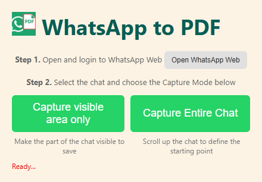
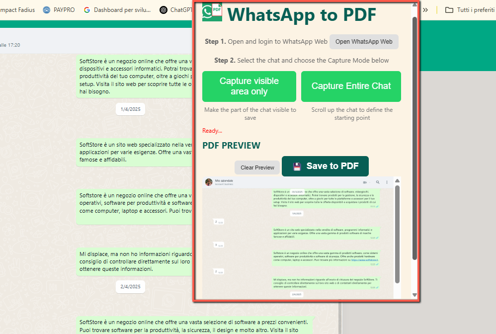

WhatsApp to PDF Exporter
Ever had an important conversation on WhatsApp that you didn’t want to lose? Meet WhatsApp to PDF Exporter — the easiest way to save and archive your WhatsApp Web chats as clean, organized PDFs.
Whether you're using WhatsApp for personal conversations, business discussions, or customer support, this extension lets you export your entire chat — messages, images, and all — into a structured PDF file. It’s perfect for archiving, sharing, or printing chat histories.
Unlike manual screenshots or copy-pasting, this extension gives you full control. Choose between capturing the visible area or the entire conversation, preview before saving, and generate high-quality multi-page PDFs in just a few clicks.
📄 How to Use
- Install the extension from the Chrome Web Store.
- Open WhatsApp Web and select the chat you want to export.
- Click the extension icon to open the capture panel.
- Choose whether to capture the visible area or the entire conversation.
- Preview the result and click “Save to PDF”.
- Done — your conversation is now saved as a PDF!
📷 Screenshots


✅ Features
- Export full WhatsApp conversations to clean, high-quality PDFs
- Choose between capturing visible area or full chat
- Live preview before saving
- Includes images and emojis from the chat
- Lightweight and easy to use — no login required
📷 Video Tutorial
Whether you're documenting professional chats or saving personal memories, WhatsApp to PDF Exporter helps you keep your conversations safe and accessible — forever.
View on Chrome Web Store